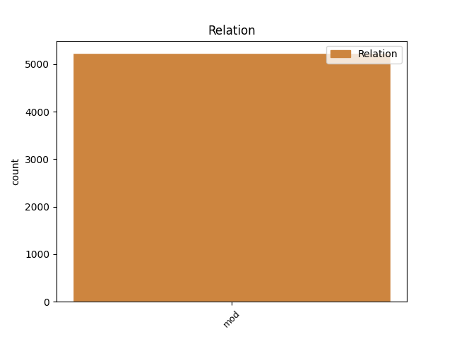
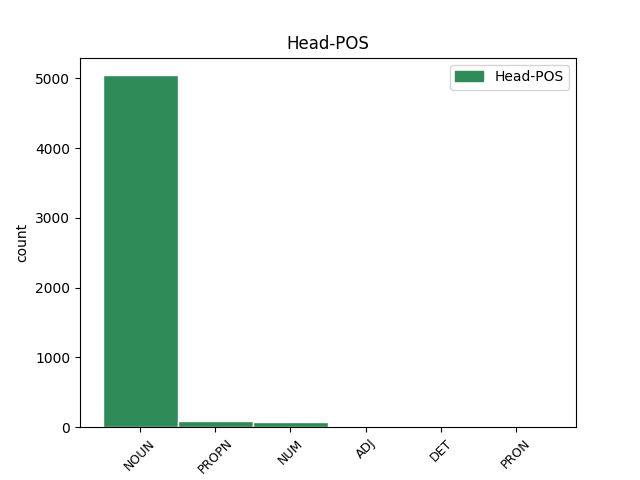
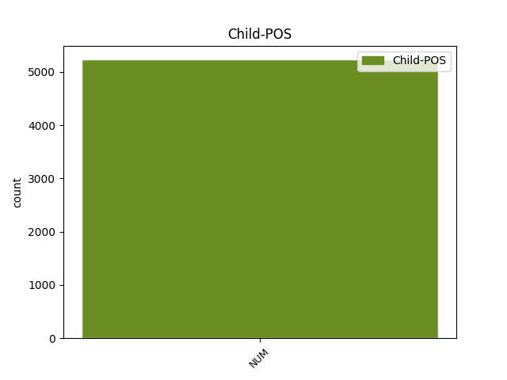

Distribution of features within this leaf



Agreement Rules sorted by frequency.
- When the dependent token is the modifer(mod) of the head token, and the dependent token is NUM.
1 Manévr _ _ _ _ 0 _ _ _
2 zmenšuje _ _ _ _ 0 _ _ _
3 riziko _ _ _ _ 0 _ _ _
4 rozbití _ _ _ _ 0 _ _ _
5 planetky _ _ _ _ 0 _ _ _
6 na _ _ _ _ 0 _ _ _
7 více _ _ _ _ 0 _ _ _
8 kusů _ _ _ _ 0 _ _ _
9 , _ _ _ _ 0 _ _ _
10 ale _ _ _ _ 0 _ _ _
11 současně _ _ _ _ 0 _ _ _
12 zvyšuje _ _ _ _ 0 _ _ _
13 energetickou _ _ _ _ 0 _ _ _
14 náročnost _ _ _ _ 0 _ _ _
15 " _ _ _ _ 0 _ _ _
16 úpravy _ _ _ _ 0 _ _ _
17 " _ _ _ _ 0 _ _ _
18 dráhy _ _ _ _ 0 _ _ _
19 zhruba _ _ _ _ 0 _ _ _
20 o _ _ _ _ 0 _ _ _
21 dva dva NUM ClYP4---------- Case=Acc|Gender=Masc|Number=Plur|NumForm=Word|NumType=Card|NumValue=1,2,3 22 mod _ LNumValue=2
22 řády řád NOUN NNIP4-----A---- Animacy=Inan|Case=Acc|Gender=Masc|Number=Plur|Polarity=Pos 0 _ _ _
23 , _ _ _ _ 0 _ _ _
24 čili _ _ _ _ 0 _ _ _
25 jsme _ _ _ _ 0 _ _ _
26 opět _ _ _ _ 0 _ _ _
27 u _ _ _ _ 0 _ _ _
28 100 _ _ _ _ 0 _ _ _
29 Mt _ _ _ _ 0 _ _ _
30 TNT _ _ _ _ 0 _ _ _
31 ! _ _ _ _ 0 _ _ _
Disagree Examples:
1 Jimi _ _ _ _ 0 _ _ _
2 přiváží _ _ _ _ 0 _ _ _
3 od _ _ _ _ 0 _ _ _
4 dodavatelů _ _ _ _ 0 _ _ _
5 jen _ _ _ _ 0 _ _ _
6 asi _ _ _ _ 0 _ _ _
7 třetinu _ _ _ _ 0 _ _ _
8 nakupovaných _ _ _ _ 0 _ _ _
9 objemů _ _ _ _ 0 _ _ _
10 , _ _ _ _ 0 _ _ _
11 ale _ _ _ _ 0 _ _ _
12 odběratelům _ _ _ _ 0 _ _ _
13 stačí _ _ _ _ 0 _ _ _
14 s _ _ _ _ 0 _ _ _
15 jejich _ _ _ _ 0 _ _ _
16 pomocí _ _ _ _ 0 _ _ _
17 rozvézt _ _ _ _ 0 _ _ _
18 devět devět NUM Cn-S4---------- Case=Acc|Number=Sing|NumForm=Word|NumType=Card 19 mod _ LNumValue=9
19 desetin desetina NUM CyFP2---------- Case=Gen|Gender=Fem|Number=Plur|NumType=Frac 0 _ _ _
20 dodávek _ _ _ _ 0 _ _ _
21 . _ _ _ _ 0 _ _ _
1 V _ _ _ _ 0 _ _ _
2 minulosti _ _ _ _ 0 _ _ _
3 se _ _ _ _ 0 _ _ _
4 nedařilo _ _ _ _ 0 _ _ _
5 celé _ _ _ _ 0 _ _ _
6 roky _ _ _ _ 0 _ _ _
7 na _ _ _ _ 0 _ _ _
8 motocyklech _ _ _ _ 0 _ _ _
9 téměř _ _ _ _ 0 _ _ _
10 nic _ _ _ _ 0 _ _ _
11 změnit _ _ _ _ 0 _ _ _
12 a _ _ _ _ 0 _ _ _
13 teď _ _ _ _ 0 _ _ _
14 jsme _ _ _ _ 0 _ _ _
15 vlastně _ _ _ _ 0 _ _ _
16 během _ _ _ _ 0 _ _ _
17 jednoho _ _ _ _ 0 _ _ _
18 roku _ _ _ _ 0 _ _ _
19 zmodernizovali _ _ _ _ 0 _ _ _
20 náš _ _ _ _ 0 _ _ _
21 motocykl _ _ _ _ 0 _ _ _
22 350 _ _ _ _ 0 _ _ _
23 na _ _ _ _ 0 _ _ _
24 tři tři NUM ClXP4---------- Case=Acc|Number=Plur|NumForm=Word|NumType=Card|NumValue=1,2,3 25 mod _ LNumValue=3
25 provedení provedení NOUN NNNS4-----A---- Case=Acc|Gender=Neut|Number=Sing|Polarity=Pos 0 _ _ _
26 . _ _ _ _ 0 _ _ _
1 V _ _ _ _ 0 _ _ _
2 praxi _ _ _ _ 0 _ _ _
3 tato _ _ _ _ 0 _ _ _
4 dnešní _ _ _ _ 0 _ _ _
5 roztříštěnost _ _ _ _ 0 _ _ _
6 nejvíce _ _ _ _ 0 _ _ _
7 doléhá _ _ _ _ 0 _ _ _
8 na _ _ _ _ 0 _ _ _
9 živnostníky _ _ _ _ 0 _ _ _
10 , _ _ _ _ 0 _ _ _
11 kteří _ _ _ _ 0 _ _ _
12 musí _ _ _ _ 0 _ _ _
13 jednat _ _ _ _ 0 _ _ _
14 kromě _ _ _ _ 0 _ _ _
15 finančního _ _ _ _ 0 _ _ _
16 úřadu _ _ _ _ 0 _ _ _
17 ještě _ _ _ _ 0 _ _ _
18 se _ _ _ _ 0 _ _ _
19 dvěma dva NUM ClFD7---------- Case=Ins|Gender=Fem|Number=Dual|NumForm=Word|NumType=Card|NumValue=1,2,3 20 mod _ LNumValue=2
20 institucemi instituce NOUN NNFP7-----A---- Case=Ins|Gender=Fem|Number=Plur|Polarity=Pos 0 _ _ _
21 . _ _ _ _ 0 _ _ _
1 Ale _ _ _ _ 0 _ _ _
2 nemůžeme _ _ _ _ 0 _ _ _
3 ji _ _ _ _ 0 _ _ _
4 uplatnit _ _ _ _ 0 _ _ _
5 vůči _ _ _ _ 0 _ _ _
6 výrobci _ _ _ _ 0 _ _ _
7 , _ _ _ _ 0 _ _ _
8 protože _ _ _ _ 0 _ _ _
9 vada _ _ _ _ 0 _ _ _
10 se _ _ _ _ 0 _ _ _
11 objevila _ _ _ _ 0 _ _ _
12 sedm sedm NUM Cn-S4---------- Case=Acc|Number=Sing|NumForm=Word|NumType=Card 15 mod _ LNumValue=7|SpaceAfter=No
13 , _ _ _ _ 0 _ _ _
14 osm _ _ _ _ 0 _ _ _
15 měsíců měsíc NOUN NNIP2-----A---- Animacy=Inan|Case=Gen|Gender=Masc|Number=Plur|Polarity=Pos 0 _ _ _
16 po _ _ _ _ 0 _ _ _
17 dodání _ _ _ _ 0 _ _ _
18 zboží _ _ _ _ 0 _ _ _
19 do _ _ _ _ 0 _ _ _
20 prodejny _ _ _ _ 0 _ _ _
21 . _ _ _ _ 0 _ _ _
1 Po _ _ _ _ 0 _ _ _
2 dohodě _ _ _ _ 0 _ _ _
3 se _ _ _ _ 0 _ _ _
4 Slovenskou _ _ _ _ 0 _ _ _
5 republikou _ _ _ _ 0 _ _ _
6 byly _ _ _ _ 0 _ _ _
7 první _ _ _ _ 0 _ _ _
8 dva _ _ _ _ 0 _ _ _
9 dluhy _ _ _ _ 0 _ _ _
10 rozděleny _ _ _ _ 0 _ _ _
11 v _ _ _ _ 0 _ _ _
12 poměru poměr NOUN NNIS6-----A---- Animacy=Inan|Case=Loc|Gender=Masc|Number=Sing|Polarity=Pos 0 _ _ _
13 dvě dva NUM ClHP1---------- Case=Nom|Gender=Fem,Neut|Number=Plur|NumForm=Word|NumType=Card|NumValue=1,2,3 12 mod _ LNumValue=2
14 ku _ _ _ _ 0 _ _ _
15 jedné _ _ _ _ 0 _ _ _
16 a _ _ _ _ 0 _ _ _
17 v _ _ _ _ 0 _ _ _
18 případě _ _ _ _ 0 _ _ _
19 československých _ _ _ _ 0 _ _ _
20 podniků _ _ _ _ 0 _ _ _
21 podle _ _ _ _ 0 _ _ _
22 toho _ _ _ _ 0 _ _ _
23 , _ _ _ _ 0 _ _ _
24 který _ _ _ _ 0 _ _ _
25 byl _ _ _ _ 0 _ _ _
26 dodavatelem _ _ _ _ 0 _ _ _
27 zboží _ _ _ _ 0 _ _ _
28 do _ _ _ _ 0 _ _ _
29 Ruska _ _ _ _ 0 _ _ _
30 . _ _ _ _ 0 _ _ _